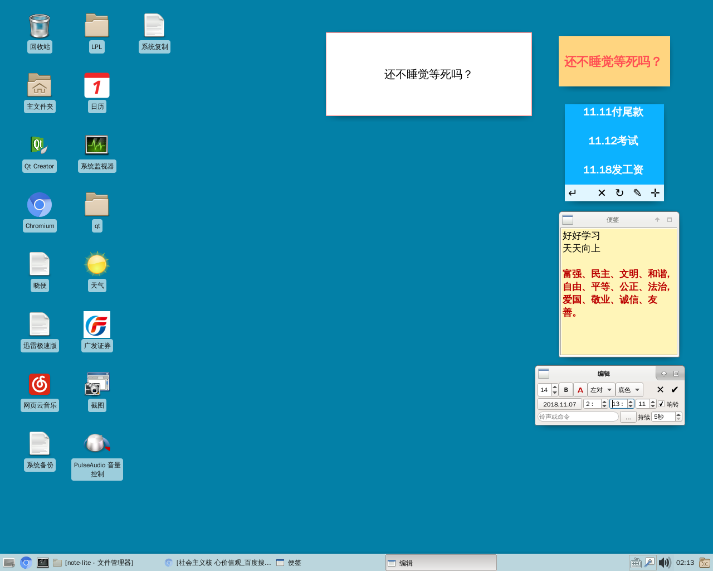

Note-lite -桌面便签 18.11.07_23:36:20Note-lite -桌面便签 中文名：晓便 该项目衍生自另一个项目NoteWei，是它的精简版。 精简至只剩下桌面便签，保留了定期闹铃。 但也增加了自定义不同铃声，优化了便签设置界面，调整闹铃提示界面。 并且修复了NoteWei里存在的多个bug。NoteWei将来会跟进这些。 【使用须知】 1.程序没自身界面，也没任务栏图标。 2.初次打开会自动生成一个空白便签。 3.双击便签进入编辑模式，此时拖放边框能调整便签大小。 3.便签能够设置：字体大小，字体颜色，字体对齐，便签背景（纯色/图片），日期&铃声。 4.鼠标放到便签上会显示操作栏。分别为：退出程序，删除便签，刷新便签，编辑便签，添加便签。 5.删除最后一个便签后程序将自动退出。 ========== 项目地址：https://www.github.com/noahsai/note-lite ========== 图中最大那个白色框为闹铃提示窗口。点击即可终止闹钟。
 |